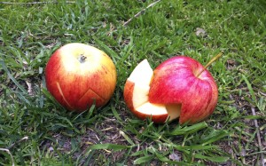

Cortas la manzana en ziczac y quitas su interior. ¡El niño que se come una manzana mágica se convierte en rey!
Cutt a ziczac and cut out the seeds of an apple. This apple crone makes a King out of any kid.
Man schneidet in ziczac um den Apfel herum und schneidet dann das Innere herraus. Jedes Kind wird zum König, welches einen Kronen -Apfel isst.